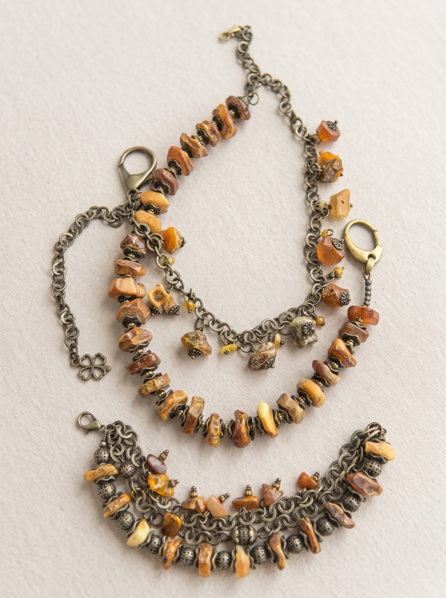
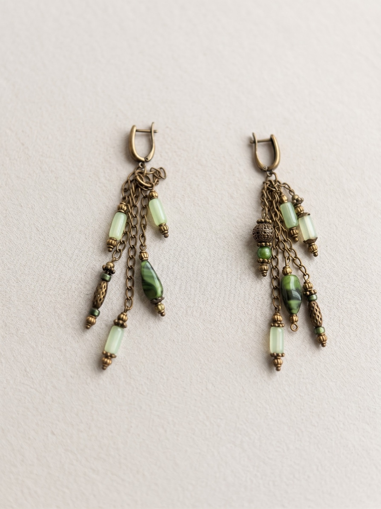

Для себя
К любимой рубашке
Зелёные бусины к натуральному льну, молочные оттенки к мягкому трикотажу. Начните с цвета, который уже есть в вашем гардеробе.
Ручная работа. Личное настроение.
Медовые оттенки, лесная зелень, светлые переливы. Выразительные украшения с винтажным настроением — для тех, кто любит вещи со своим характером.
Познакомиться с мастерскойУкрашения и комплекты — в разделе «Каталог» в меню.

Носить по-своему
Украшение не обязательно выбирают
к событию. Иногда — просто потому,
что оно нравится.
Для себя
Зелёные бусины к натуральному льну, молочные оттенки к мягкому трикотажу. Начните с цвета, который уже есть в вашем гардеробе.
В подарок
Любимый цвет, знакомая форма, деталь, которую заметите только вы. Начните с того, что знаете о близком человеке.
На особый случай
Длинные серьги с мерцающей бахромой или колье с медальоном. Однотонная ткань оставит выразительной форме достаточно пространства.

О мастерской
В основе этой мастерской — простая идея: дать бабушкиным украшениям ручной работы своё место. Где можно рассмотреть каждую бусину, выбрать подарок или найти что-то для себя.
Мы вместе с бабушкой сфотографировали её работы, чтобы показать их здесь. На снимках можно увидеть, как сочетаются цвета, как устроены подвески и как отдельные украшения складываются в комплекты.
Мастерская Нелли
Как выбрать
Красиво — это важно.
Удобно носить — тоже.
В каталоге можно оставить только серьги, колье, браслеты или комплекты. Выбирайте по силуэту и любимым оттенкам.
Откройте карточку, чтобы рассмотреть фотографию и узнать, что входит в комплект. У колье «Медовая тропа» есть второй ракурс.
Перед покупкой важно знать длину, вес и материалы украшения. Мы дополняем эти сведения вместе с ценами и условиями заказа.